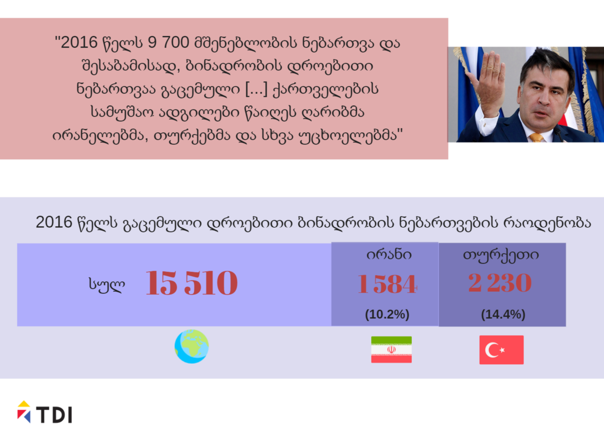
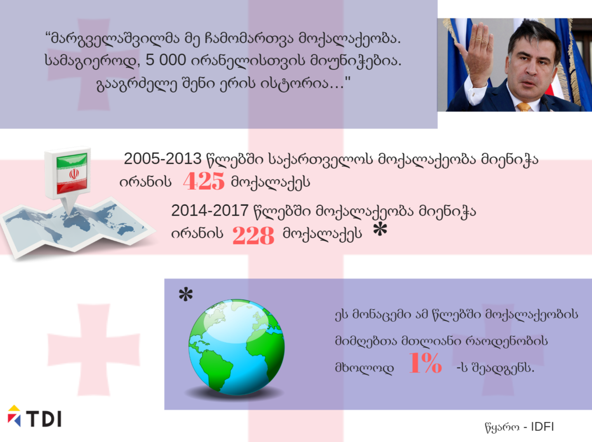

ტოლერანტობის და მრავალფეროვნების ინსტიტუტი (TDI) საქართველოს მე-3 პრეზიდენტის, "ერთიანი ნაციონალური მოძრაობის" ლიდერის, მიხეილ სააკაშვილის მიერ გავრცელებულ ქსენოფობიურ განცხადებებს ეხმაურება.
TDI მიიჩნევს, რომ სააკაშვილის განცხადებები შეიცავს დაუზუსტებელ ინფორმაციას და ახდენს კონკრეტული ქვეყნების წარმომადგენლებისა და ეკონომიკური შესაძლებლობების მქონე ადამიანების სტიგმატიზებას.
9 სექტემბრის ვიდეომიმართვაში, სააკაშვილმა საქართველოს მიგრაციულ პოლიტიკაზე ისაუბრა:
"2016 წელს 9 700 მშენებლობის ნებართვა და შესაბამისად, ბინადრობის დროებითი ნებართვაა გაცემული. აქედან 20% დასაქმდა დაბალი კვალიფიკაციის სამშენებლო სამუშაოებზე, 20% ავტოტრანსპორტის შემკეთებლად და მექანიკოსად, 11% მმართველ დირექტორებად და მთავარ აღმასრულებელ თანამდებობებზე, 7% - მძღოლებად. ესე იგი, ეს სტატისტიკა უტყუარად აჩვენებს, რომ ქართველების სამუშაო ადგილები წაიღეს ღარიბმა ირანელებმა, თურქებმა და სხვა უცხოელებმა. მდიდარი ინვესტორების ნაცვლად, რომელთაც ქართველები უნდა დაესაქმებინათ, მივიღეთ გაღლეტილი მიგრანტები, რომლებიც საკუთარ თავს ძლივს ასაქმებენ. მე მართლა ვაძლევდი მოქალაქეობას თურქეთის რესპუბლიკის მოქალაქეებს, ნუ, უფრო ნაკლებად ირანის მოქალაქეებს, მაგრამ ესენი იყვნენ 99% ეთნიკური ქართველები"[1].
განცხადებაში არსებული სტატისტიკური მაჩვენებლები შინაარსობრივად განსხვავდება ერთმანეთისგან, მასში სელექციურად არის შერჩეული მონაცემები და წარმოადგენს მცდარ ინფორმაციას.
“უცხოელთა და მოქალაქეობის არმქონე პირთა სამართლებრივი მდგომარეობის შესახებ” საქართველოს კანონის თანახმად, საქართველოში დროებითი ბინადრობის ნებართვები გაიცემა კონკრეტული კატეგორიების მიხედვით[2].
საქართველოს კანონმდებლობის თანახმად, მშენებლობის ნებართვა არ არის დროებითი ბინადრობის ნებართვის მიღების სამართლებრივი საფუძველი. შესაძლოა სამშენებლო საქმიანობა მოიცავდეს საინვესტიციო ბინადრობის მიღების კომპონენტსაც, თუმცა საინვესტიციო ბინადრობის ნებართვისთვის საჭიროა კანონმდებლობით დადგენილი 300 000 - ლარიანი ინვესტიციის შესახებ აუდიტორული დასკვნა. ამასთანავე, საინვესტიციო ბინადრობის ნებართვა ეკუთვნის მუდმივი ბინადრობის ტიპების კატეგორიას და არა დროებითს.
სსიპ “სახელმწიფო სერვისების განვითარების სააგენტოს” მიერ TDI-სთვის მოწოდებული ინფორმაციის თანახმად, 2016 წელს, დროებითი ბინადრობის ნებართვა გაიცა სულ 15 510 განმცხადებელზე, მათ შორის წარმოშობით ირანის ისლამური რესპუბლიკიდან არის 1 584, ხოლო წარმოშობით თურქეთის რესპუბლიკიდან 2 230 დროებითი ბინადრობის ნებართვის მიმღები.

მიხეილ სააკაშვილმა 1 სექტემბერს ასევე აღნიშნა: “მარგველაშვილმა მე ჩამომართვა მოქალაქეობა. სამაგიეროდ, 5 000 ირანელისთვის მიუნიჭებია. გააგრძელე შენი ერის ისტორია…[3]” - ყოფილი პრეზიდენტის მიერ მოწოდებული ეს ინფორმაციაც მცდარია.
IDFI-ის მიერ მომზადებული სტატისტიკური ანალიზის თანახმად, 2005-2013 წლებში მოქალაქეობა მიენიჭა ირანის 425 მოქალაქეს[4], ხოლო, 2014-2017 წლებში საგამონაკლისო წესით მოქალაქეობის მინიჭების შესახებ დადებითი რეკომენდაცია გაიცა ირანის 228 მოქალაქეზე, რაც ამ წლებში მოქალაქეობის მიმღებთა მთლიანი რაოდენობის მხოლოდ 1 %-ს შეადგენს[5].

31 აგვისტოს, მიხეილ სააკაშვილმა თავის მორიგ ვიდეომიმართვაში აღნიშნა[6]:
"ტურისტი დღეს საქართველოში შემოდის თავისი საჭმლით, თავისი შპროტით და ძეხვით. მანქანით შემოდის რუსეთიდან, თურქეთიდან ან ირანიდან და საქართველოში პრაქტიკულად არ ტოვებს ფულს."
სინამდვილეში, ტურისტული სექტორის მთლიანი შემოსავალი, 2012 წლის შემდეგ პრაქტიკულად გაორმაგებულია და $2.7 მილიარდს აჭარბებს. გაზრდილია ქვეყნის ეკონომიკაში ტურიზმის წილიც და 6.9%-ს აღწევს.
TDI მიიჩნევს, რომ საქართველოს ყოფილი პრეზიდენტის, ერთ-ერთი ძლიერი ოპოზიციური კოალიციის ლიდერის, მიხეილ სააკაშვილის ბოლოდროინდელი როტორიკა შეიცავს მიზანმიმართულ ქსენოფობიას, აღვივებს საქართველოში სხვადასხვა მიზნით ჩამოსული ადამინების წინააღმდეგ შუწყნარებლობას, რაც განსაკუთრებით საგანგაშოა ბოლო წლების განმავლობაში სხვადასხვა რადიკალური, ფაშისტური და რასისტული ჯგუფის გამრავლებისა და არატოლერანტული განწყობების გაძლიერების ფონზე.
[1] http://www.tabula.ge/ge/verbatim/136686-saakashvili-fsevdoliberalebs-vurchev-kargad-tsaikitxon-makkeinis-tsigni-sadac-chemze
[2] შრომითი ბინადრობის ნებართვა, რომელიც სამეწარმეო ან შრომითი საქმიანობის განსახორციელებად გაიცემა; სასწავლო ბინადრობის ნებართვა, რომელიც საქართველოში ავტორიზებულ საგანმანათლებლო დაწესებულებაში სწავლის მიზნით გაიცემა; სპეციალური სახის ბინადრობის ნებართვები - ნებართვა, რომელიც გაიცემა უცხოელზე, რომელიც (ტრეფიკინგის) დანაშაულის მსხვერპლი ან დაზარალებულია ან ნებართვა, რომლის თანახმად „ქალთა მიმართ ძალადობის ან/და ოჯახში ძალადობის აღკვეთის, ძალადობის მსხვერპლთა დაცვისა და დახმარების შესახებ“ საქართველოს კანონის შესაბამისად მინიჭებული აქვს მსხვერპლის სტატუსი; ოჯახის გაერთიანების მიზნით, რომელიც გაიცემა უცხოელის ოჯახის წევრზე; ბინადრობის ნებართვა საქართველოს ყოფილი მოქალაქეობისთვის და მოქალაქეობის არმქონე პირის ბინადრობის ნებართვა, რომელიც გაიცემა პირზე, რომელსაც საქართველოში დაუდგინდა მოქალაქეობის არმქონე პირის სტატუსი. მოკლევადიანი ბინადრობის ნებართვა, რომელიც გაიცემა უცხოელზე, რომელსაც საქართველოს ტერიტორიაზე, საქართველოს კანონმდებლობით დადგენილი წესით აქვს საკუთრების უფლება უძრავ ნივთზე.
[3]http://www.tabula.ge/ge/verbatim/136409-saakashvili-margvelashvilma-me-chamomartva-moqalaqeoba-da-5000-iranels-mianicha
[4] https://idfi.ge/ge/statistical-information-on-foreign-citizens-being-granted-residence-permit
[5] https://idfi.ge/public/upload/IDFI_Photos_2018/data_lab/Citizenship_on_awarding_citizenships.pdf
[6] https://www.facebook.com/SaakashviliMikheil/videos/217228869150069/